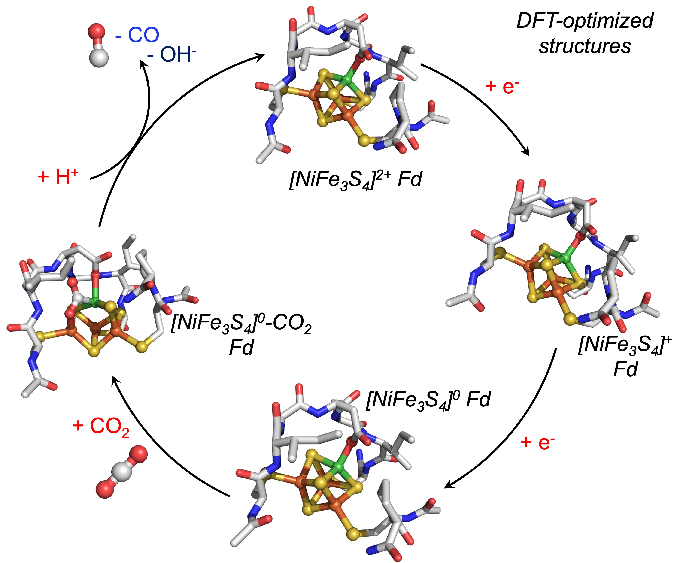
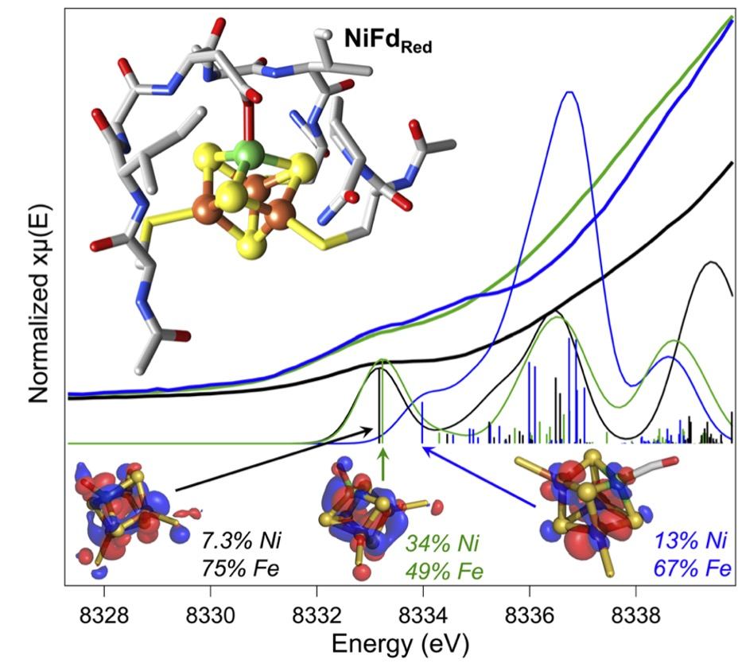

The nickel–iron carbon monoxide dehydrogenase (CODH) enzyme uses a heterometallic nickel–iron– sulfur ([NiFe4S4]) cluster to catalyze the reversible interconversion of carbon dioxide (CO2) and carbon monoxide (CO). These reactions are essential for maintaining the global carbon cycle and offer a route towards sustainable greenhouse gas conversion but have not been successfully replicated in synthetic models, in part due to a poor understanding of the natural system. Though the general protein architecture of CODH is known, the electronic structure of the active site is not well-understood, and the mechanism of catalysis remains unresolved. To better understand the CODH enzyme, we have developed a protein-based model containing a heterometallic [NiFe3S4] cluster in the Pyrococcus furiosus (Pf) ferredoxin (Fd). This model binds small molecules such as carbon monoxide and cyanide, analogous to CODH. Multiple redox- and ligand-bound states of [NiFe3S4] Fd (NiFd) have been investigated using a suite of spectroscopic techniques, including resonance Raman, Ni and Fe K-edge Xray absorption spectroscopy, and electron paramagnetic resonance, to resolve charge and spin delocalization across the cluster, site-specific electron density, and ligand activation. The facile movement of charge through the cluster highlights the fluidity of electron density within iron–sulfur clusters and suggests an electronic basis by which CN− inhibits the native system while the CO-bound state continues to elude isolation in CODH. The detailed characterization of isolable states that are accessible in our CODH model system provides valuable insight into unresolved enzymatic intermediates and offers design principles towards developing functional mimics of CODH.
To gain some information on the interaction between the metallocofactor and protein environment, density functional theory calculations were used. A computational model was constructed that included the ligating residues and secondary coordination sphere. Geometry optimizations were performed for the cluster assuming local and global high spin congurations, which overestimates bond lengths but allows us to qualitatively consider general trends across redox state changes and upon CO binding. This method was not deemed appropriate for calculations on the NiFd–CN state because of the XAS evidence in favor of a low-spin Ni(II) center. Minimal structural perturbations were observed upon cluster reduction from the NiFdox to the NiFdred state, with all metal centers retaining a tetrahedral geometry. Two conformations of the Asp14 ligand could be optimized for the CO-bound state, one in which the aspartate remains ligated and a Ni–sulfurde bond breaks, and another in which the aspartate rotates away from the cluster. The EXAFS data and analyses led us to favor the latter geometry, in which the aspartate coordination to the cluster is broken, which preserves tetrahedral geometry at the nickel center and gives a near-linear Ni–C–O bond of 170°. No structures converged in which CO was bound to any of the Fe centers.

